전파전자통신기사 (2003-05-25 기출문제)
1과목: 디지털전자회로
1. 연산증폭기를 사용한 아날로그 계산기에서 미분기 대신 적분기를 사용하는 가장 큰 이유는?
- 적분기의 회로가 간단하다.
- 적분기는 비선형이다.
- 적분기의 계산속도가 빠르다.
- 적분기는 잡음특성이 좋다.
(정답률: 알수없음)

2. 아래 그림의 설명 중 가장 적합한 내용은?
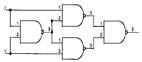
- JK플립플롭이다.
- T형플립플롭이다.
- Exclusive-OR 게이트이다.
- 가산기이다.
(정답률: 알수없음)
3. 그림과 같은 회로의 입력으로 스텝 전압을 인가할때 출력전압 파형은? (단, A는 이상적인 연산 증폭기이다.)
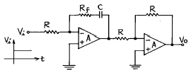
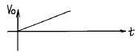
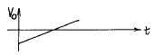
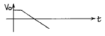
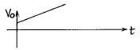
(정답률: 알수없음)
4. 14핀 TTL IC에서 2개의 단자는 +전원과 접지로 사용된다. 그러면 이 14핀 IC에 넣을 수 있는 인버터의 개수는 최대 몇 개인가?
- 3 개
- 4 개
- 5 개
- 6 개
(정답률: 알수없음)
5. 다음 연산증폭회로에서 출력전압 Vo는?
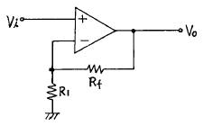
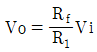
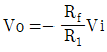
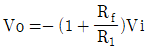
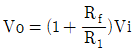
(정답률: 알수없음)
6. 입력 임피던스를 높이기 위한 회로방식에 해당하지 않는 것은?
- 부우트스트랩(bootstrap)접속
- 다아링톤(darlington)접속
- CC(컬렉터접지)접속
- 캐스코오드(cascode)접속
(정답률: 알수없음)
7. 다음 회로의 출력전압을 구하면?
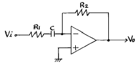
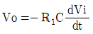
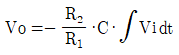
- Vo = -jWCR2Vi/(1+jWCR1)
- Vo = -jWCR1Vi/(1+jWCR2)
(정답률: 알수없음)
8. 다이오드 검파에서 얻은 AGC 전압의 크기는 무엇에 따라 커지는가?
- 반송파 주파수
- 반송파 전압
- 피변조파의 변조도
- 변조파의 주파수
(정답률: 알수없음)
9. 어떤 논리회로에서 입력은 A, B, C 이며 출력은 입력 중에서 둘이상이 1일 때 출력 Y가 1이 된다면 이 논리회로의 논리식은?
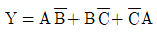
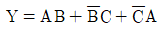
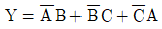
- Y = AB+BC+CA
(정답률: 알수없음)
10. 스위칭 정전압 제어기에서 제어 트랜지스터가 도통되는 시간은?
- 입력전압이 정해진 제한을 넘어설 때만
- 항상
- 과부하가 걸렸을 때만
- 일정부분의 시간에서만
(정답률: 알수없음)
11. 다음 회로에서 다이오드 D1과 D2가 동시에 차단상태로 되는 조건으로 옳은 것은? (단,V2 > V1이다.)
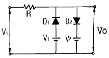
- Vi ≤ V1
- V1 > Vi > V2
- V1 < Vi < V2
- Vi ≥ V2
(정답률: 알수없음)
12. 그림에서의 전달 함수 X/XS는?
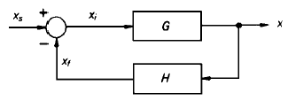
- G/1+GH
- H/1-GH
- G/G+H
- GH/1+H
(정답률: 알수없음)
13. 다음의 Karnaugh도로 주어진 함수를 최소의 곱의 합함수로 만든 것은?
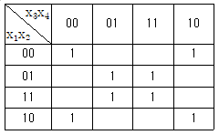
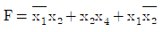
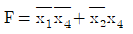
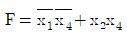
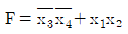
(정답률: 알수없음)
14. 프리엠퍼시스(pre-emphasis)회로는 어느 회로와 같은가?
- 저역통과필터
- 고역통과필터
- 대역통과필터
- 대역저지필터
(정답률: 알수없음)
15. 그림의 회로에서 R1=150㏀, Rf=900㏀, V1=3V일 때, 출력전압 Vo는?
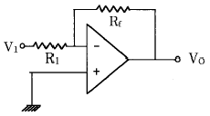
- -12〔V〕
- -15〔V〕
- -18〔V〕
- -20〔V〕
(정답률: 알수없음)
16. 다음과 같은 DCTL 논리 회로의 게이트 기능은?
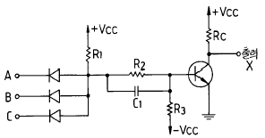
- NOR
- NOT
- NAND
- AND
(정답률: 알수없음)
17. 변조도 40[%]의 진폭변조에서 반송파의 평균전력이 300[mW]일 때 피변조파의 평균전력은 약 얼마인가?
- 100[mW]
- 300[mW]
- 324[mW]
- 424[mW]
(정답률: 알수없음)
18. 그레이 코드(Gray Code) 1111을 2진수로 변환한 값은?
- 1110
- 1010
- 1011
- 1111
(정답률: 알수없음)
19. 연산증폭기의 이상 조건을 설명한 것이 아닌 것은?
- 입력 임피던스가 크고 여기에 흐르는 전류는 입력 전류에 비해 무시될수 있어야 한다.
- 부하변동이 OP-Amp의 특성에 영향을 주지 않을 정도로 출력임피던스 값이 작아야 한다.
- 응답시간의 벗어남이 전혀 없어야 한다.
- 입력전압은 출력전압에 비하여 충분히 커야 한다.
(정답률: 알수없음)
20. 아래의 그림과 같은 전압분할 바이어스의 CE 증폭기에서 동작점에서의 전류 ICQ와 C-E간 전압 VCEQ의 값을 구하면? (단, 트랜지스터의 VBE(ON) = 0.7 [V], IC = IE로 간주한다.)
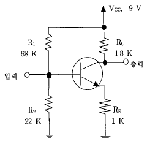
- ICQ = 1.0 [mA], VCEQ = 4.5 [V]
- ICQ = 1.5 [mA], VCEQ = 4.8 [V]
- ICQ = 1.8 [mA], VCEQ = 4.2 [V]
- ICQ = 2.0 [mA], VCEQ= 5.0 [V]
(정답률: 알수없음)
2과목: 무선통신기기
21. 600[Ω]의 평행 2선식 급전선을 사용하는 200[W]송신기의 출력을 전구에 의한 의사부하로 시험코자 할때 가장 적당한 방법은?
- 100[V],200[W] 전구1개
- 100[V],100[W] 전구2개 직렬
- 100[V],60[W] 전구4개 직렬
- 100[V],30[W] 전구7개 직렬
(정답률: 알수없음)
22. 어떤 전원 정류기에서 전부하의 출력 전압이 250[V]일 때 전압 변동률이 20[%]일 경우 무부하시 전압은?
- 500[V]
- 312.5[V]
- 300[V]
- 475[V]
(정답률: 알수없음)
23. FS통신 방식은 다음 중 어느 것인가?
- 일종의 PM방식이다.
- 일종의 FM방식이다.
- 일종의 링변조방식이다.
- 일종의 SSB방식이다.
(정답률: 알수없음)
24. 마이크로파 송신기의 전력 측정에 사용되는 방향성 결합기를 이용하여 측정할 수 없는 것은?
- 정재파비
- 위상차
- 결합도
- 반사계수
(정답률: 알수없음)
25. 수신기의 양부를 판정하는 기준이 아닌것은?
- 감도
- 선택도
- 충실도
- 상호 변조적 왜곡
(정답률: 알수없음)
26. 무선통신에 사용되는 스펙트럼 확산통신방식의 특징을 나타내는 것은?
- 도청으로부터 메시지 보호가 유리하다.
- 고전력 스펙트럼이 필요하다.
- 대용량 M/W 시스템에 적용이 용이하다.
- 주파수 대역폭이 극히 좁다.
(정답률: 알수없음)
27. FM송신기에서 사용되는 pre - emphasis회로에 관한 설명 중 맞는 것은?
- 변조신호의 높은 주파수 성분을 낮게 하여 변조한다.
- 선택도가 개선된다.
- 전력 증폭기의 효율을 높이기 위하여 사용한다.
- S/N비를 향상시키는 효과가 있다.
(정답률: 알수없음)
28. 출력 500W의 J3E 송신에서 무변조시 공중선 전력은 몇 [W]인가?
- 1[W]
- 707[W]
- 500[W]
- 0[W]
(정답률: 알수없음)
29. 고주파 증폭기의 이득이 30[㏈], 변환이득이 -3[㏈] 인 슈퍼헤테로다인 수신기의 입력에 50[㎶]의 고주파 전압을 걸어 검파기 입력단에서 0.5[V]를 얻었다면 중간 주파 증폭기의 이득은?
- 53 [㏈]
- 27 [㏈]
- 15 [㏈]
- 0.5 [㏈]
(정답률: 알수없음)
30. 다음중 수신기의 안정도에 영향을 주는 사항중 가장 적은 영향을 주는 것은?
- 국부 발진회로
- 증폭회로
- 부품의 노후
- 주파수 특성
(정답률: 알수없음)
31. PCM통신방식의 동작순서가 옳게 배열된 것은?
- 신장 → 양자화 → 부호화 → 복호화 → 압축
- 신장 → 복호화 → 양자화 → 부호화 → 압축
- 압축 → 복호화 → 양자화 → 부호화 → 신장
- 압축 → 양자화 → 부호화 → 복호화 → 신장
(정답률: 알수없음)
32. 스미스선도(Smith chart)를 이용하여 구할 수 없는 값은?
- 미지역율
- 미지임피던스
- 정재파비
- 반사계수
(정답률: 알수없음)
33. 다음 중 고주파 가열 전원과 관계 없는 것은?
- 진공관 발진기
- 마그네트론 발진기
- 인버터
- 다이나트론 발진기
(정답률: 알수없음)
34. FM검파기의 분류중 주파수 변화에 따르는 VCO의 제어 신호를 검출하는 방법에 해당되는 것은?
- PLL 검파기
- Foster-seeley 검파기
- Ratio 검파기
- Quadrature 검파기
(정답률: 알수없음)
35. 축전지에서 AH(암페어시)가 나타내는 것은?
- 축전지의 사용가능시간
- 축전지의 용량
- 축전지의 충전전류
- 축전지의 방전전류
(정답률: 알수없음)
36. 무선 송신기에서 발생하는 스퓨리어스를 적게 하는 방법이 아닌 것은?
- 트랩(trap)회로를 삽입한다.
- 출력 결합회로의 Q를 높인다.
- 푸시풀 증폭으로 하여 기수차 고조파를 작게한다.
- 송신기와 급전선의 사이에 BPF를 삽입한다.
(정답률: 알수없음)
37. 다음은 벡터 합성법에 의한 FM송신기에 대한 설명이다. 합당치 않은것은 어느 것인가?
- 리액턴스관을 사용하여 주파수 안정도가 매우 좋다.
- 자동주파수 제어회로가 불필요하다.
- IDC회로에서 일정 입력 레벨로 증폭을 제한한다.
- 위상 변조로 등가 FM파를 얻으려면 전치보상기 회로가 필요하다.
(정답률: 알수없음)
38. 그림과 같은 수퍼헤테로다인 수신기에서 제1중간주파수가 10[MHz]이고 제2중간주파수가 500[KHz]라고 할때 30[MHz]의 입력신호를 수신하려면 A와 B의 발진 주파수는?
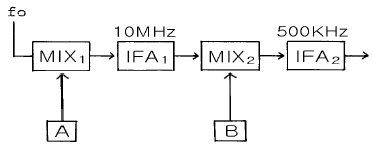
- A : 20[MHz], B : 9.5[MHz]
- A : 20[MHz], B : 20.5[MHz]
- A : 30[MHz], B : 10[MHz]
- A : 20[MHz], B : 500[MHz]
(정답률: 알수없음)
39. 검파기의 부하가 직류와 교류의 시정수가 상이해지므로서 발생되는 파형왜곡은?
- Negative Peak Clipping
- 포락선 왜곡
- Diagonal Clipping
- 하강 경사 왜곡
(정답률: 알수없음)
40. 지구국 수신계의 종합성능을 나타내는 G/T에 대한 설명이다. 알맞는 것은?
- 지구국의 간섭성능을 나타낸다.
- 수신안테나 이득과 수신계의 잡음온도 차이다.
- 인텔셋의 표준값은 앙각이 90° 일때이다.
- 수신계의 잡음온도는 273° K일때를 기준으로 한다.
(정답률: 알수없음)
3과목: 안테나공학
41. 급전점이 전류 정재파의 파복이 되는 것은?
- 동조급전
- 비동조급전
- 전류급전
- 전압급전
(정답률: 알수없음)
42. 단파대의 불감지대에서 신호가 잡히는 현상으로 가장 적합한 원인은?
- 회절파
- 산악회절파
- 대류권 산란파
- 전리층 산란파
(정답률: 알수없음)
43. 반파장 다이폴(dipole) 안테나의 실효길이는? (단, λ 는 파장)
- λ/π
- π/λ
- 2λ/π
- 2π/λ
(정답률: 알수없음)
44. 인덕턴스가 30[μH], 정전용량이 40[pF]인 안테나가 있다. 이 안테나를 6[MHz]로 사용하기 위해 직렬로 연결된 단축 콘덴서는 얼마인가?
- 36.7 [pF]
- 46.7 [pF]
- 56.7 [pF]
- 66.7 [pF]
(정답률: 알수없음)
45. 평행2선식 급전선이 동축급전선 보다 잘 사용되지 않고 있다. 그 이유로 가장 적합한 것은?
- 건설비가 비싸고 수리가 어럽다.
- 특성임피던스가 낮아서 정합회로가 복잡해진다.
- 유도방해가 있으며 간격의 유지 등 취급이 불편하다.
- 대전력용으로 매우 부적합하다.
(정답률: 알수없음)
46. 그림과 같이 특성 임피던스가 Z1과 Z2인 평행 2선로의 상호간을 λ/4 의 선로로 정합시키고자 한다. 정합선로로 삽입하여야 할 선로의 특성 임피던스 ZO는? (단, Z1 = 600[Ω], Z2 = 150[Ω])
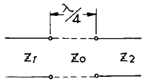
- 75[Ω]
- 150[Ω]
- 300[Ω]
- 600[Ω]
(정답률: 알수없음)
47. 극초단파 이상의 전송선로로 도파관이 쓰이는 이유는?
- 동축케이블 보다 감쇠가 적기 때문에.
- 관내 파장이 자유공간 파장 보다 길기 때문에.
- 차단 주파수 이하의 신호는 통과시키지 않기 때문에.
- 부정합 상태에서 정재파가 생기지 않기 때문에.
(정답률: 알수없음)
48. 매질의 비유전율이 9이고, 비투자율이 1일때 전파속도는 얼마인가?
- 1/9 ×108[m/sec]
- 1/3 ×108[m/sec]
- 1 × 108[m/sec]
- 3 × 108[m/sec]
(정답률: 알수없음)
49. 정지위성을 이용하는 대형 지구국 안테나로 적합한 것은?
- 카세그레인(cassegrain) 안테나
- 이퀴앵귤러(equiangular) 안테나
- 패스렝스(path-length) 안테나
- 파라볼라(parabola) 안테나
(정답률: 알수없음)
50. 다음 중 루우프 안테나 특성에 속하지 않는 것은?
- 소형이고 이동이 용이하다.
- 주파수에 관계없이 8자 지향특성을 갖는다.
- 방위측정에 사용된다.
- 야간보다 주간에 오차가 발생되어 불완전 동작을 한다.
(정답률: 알수없음)
51. Folded Antenna를 만들때 일반적으로 n(소자수)개로 접으면 급전점 임피이던스는 몇 배로 증가하는가?
- n2
- n
- 1/n
- 1/n2
(정답률: 알수없음)
52. 송신안테나에서 전파의 가시거리 184.95[km]되는 지점에 높이가 400[m]인 수신 안테나를 설치하였다고 하면 송신 안테나의 최소 높이는 얼마로 해야 되겠는가? (단, 두 지점간의 대지는 평탄하다고 가정한다.)
- 425[m]
- 525[m]
- 625[m]
- 725[m]
(정답률: 알수없음)
53. 빔(beam) 안테나의 특성에 관한 설명으로 틀린 것은?
- 고이득과 고지향성을 얻을 수 있다.
- 큰 복사전력을 얻을 수 있다.
- 주파수 이용도가 제한되어 있다.
- 근접 주파수의 혼신, 공전 및 인공잡음의 방해가 적다.
(정답률: 알수없음)
54. 복사저항을 Rr, 안테나의 손실저항을 Ro라 할때 안테나 효율은?
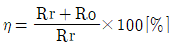

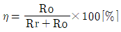
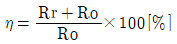
(정답률: 알수없음)
55. Yagi 안테나의 특징이 아닌 것은?
- TV(텔레비젼) 전파수신용으로 사용된다.
- 쌍향성의 예민한 지향성을 갖는다.
- 소자수가 많을수록 임피던스가 낮아진다.
- 도파기의 수를 증가 시키면 이득이 증대된다.
(정답률: 알수없음)
56. 장·중파대에서 주가되는 지상파는?
- 직접파
- 대지반사파
- 지표파
- 회절파
(정답률: 알수없음)
57. 슈퍼 턴스타일 안테나를 송신에 사용할 경우 수신용으로 수직 다이폴 안테나를 사용할 수 없는 이유는?
- 전파의 회절성 때문에
- 전파의 편파성 때문에
- 전파의 직진성 때문에
- 전파는 횡파이므로
(정답률: 알수없음)
58. 미소 다이폴 안테나에서 발생된 전계 강도를 계산하는 식은? (Pr : 급전 전력, R : 안테나로 부터 떨어진 거리)
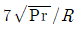
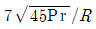
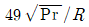
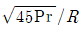
(정답률: 알수없음)
59. 임계 주파수가 4[MHz]인 전리층에 8[MHz]를 인가하였을 때의 도약거리는? (전리층의 겉보기 높이는 150[km]이다.)
- 420[km]
- 470[km]
- 520[km]
- 570[km]
(정답률: 알수없음)
60. 다음 중 혼신의 방해를 가장 적게 하는 방법은?
- 안테나의 접지를 완전하게 한다.
- 안테나의 도체 저항을 적게 한다.
- 지향성 안테나를 사용한다.
- 안테나의 높이를 높게 한다.
(정답률: 알수없음)
4과목: 통신영어 및 교통지리
61. Choose the correct one which belong to the following definition.
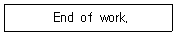
- NIL
- NO
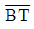
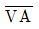
(정답률: 알수없음)
62. Choose the right definition for the given sentence.
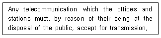
- Radio
- Radiocommunication
- Public Correspondence
- Telecommunication
(정답률: 알수없음)
63. Choose the suitable one in the blank.
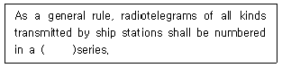
- daily
- weekly
- monthly
- yearly
(정답률: 알수없음)
64. 미국의 MASSACHUSETTS주에 소재하며, 미국의 과학, 문학, 미술 및 음악의 중심지로서 유명한 항만 도시는?
- NEW JERSEY
- NORFALK
- CHARLESTON
- BOSTON
(정답률: 알수없음)
65. Choose the one abbreviation which would be appropriate in the following sentences.
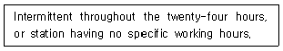
- HJ
- HN
- HT
- HX
(정답률: 알수없음)
66. BAY OF BENGAL 해역에서 주로 발생하는 열대성 저기압은?
- WILLY - WILLY
- CYCLONE
- HURRICANE
- TYPHOON
(정답률: 알수없음)
67. 다음중 HONG KONG에 소재하는 해안국은?
- VAK Kompong Radio(XUK2)
- Bitung Radio(PKM)
- Macau Radio(XXG)
- Cape D' Aguilar Radio(VPS)
(정답률: 알수없음)
68. Choose the best word to fill in the blank in the following sentence.
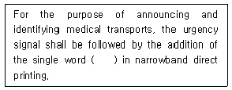
- MEDICAL
- SECURITE
- NAVTEX
- SEELONCE
(정답률: 알수없음)
69. 다음 Coast Earth Station의 소속 국가명이 다른 것은?
- Beijing - Chaina
- Cape D Auilar - Hong Kong
- Kunsan - India
- Jeddah - Saudi Arabia
(정답률: 알수없음)
70. 우리나라 항무통신 호출 부호중 짝지은 지역명이 틀리는 것은?
- 6MF - 항무부산
- 6MP - 항무군산
- 6MY - 항무여수
- 6MZ - 항무동해
(정답률: 알수없음)
71. Choose the one among the examples and fill in blanks of the following sentence.
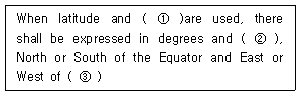
- ① longitude, ② seconds, ③ Greenwich
- ① longitude, ② minutes, ③ Greenwich
- ① Lat, ② minutes, ③ Meridian
- ① longitude, ② bearings, ③ Meridian
(정답률: 알수없음)
72. INMARSAT 해안지구국과 그 담당해역이 틀린 것은?
- Fucino : Atlantic Ocean
- Tangua : Atlantic Ocean
- Yamaguchi : Indian Ocean
- Umm-al-Aish : Pacific Ocean
(정답률: 알수없음)
73. Fill in the blank with the suitable words.
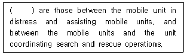
- Intercommunications
- Interal communications
- Simplex communications
- On-scene communications
(정답률: 알수없음)
74. Choose the right one means the following.
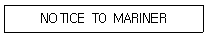
- NO
- NIL
- NC
- NX
(정답률: 알수없음)
75. Select appropriate one in the blank in following Radio Regulation.
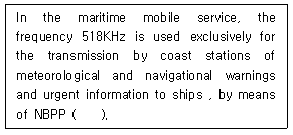
- International NAVAREA
- Digital selective calling
- International NAVTEX
- Enhanced Group Call
(정답률: 알수없음)
76. Taiwan에 소재하고 있는 해안국은?
- Kaohsiung Radio/XSW
- Hongkong Radio/VPS
- Manila Radio/DZG
- Surabaya Radio(PKD)
(정답률: 알수없음)
77. Which is the common frequency band in the GMDSS Areas?
- MF
- HF
- VHF
- UHF
(정답률: 알수없음)
78. Choose the incorrect meaning of each message.
- Remittance badly needed - 송금 필요 없음
- Prospect reply immediately - 즉시 회전 바람
- Ship as possible quantity - 가능한한 많이 적재바람
- Despite bad weather finish unloading - 악천후에도 불구하고 하역을 끝내시오.
(정답률: 알수없음)
79. Which is the most correct meaning in the following sentence?
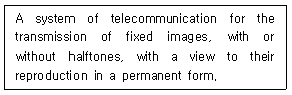
- Radiotelephone call
- Radiotelemetering
- Telephoney
- Facsimile
(정답률: 알수없음)
80. Fill the blank with the most proper word.
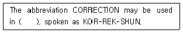
- radiotelephony
- telecommunication
- radiocommunication
- radiotelegraphy
(정답률: 알수없음)
5과목: 전파관계법규
81. SOLAS 규정상 모든 선박은 항해중 다음의 기능을 수행할 수 있어야 한다. 이 규정에 해당하지 아니한 것은?
- 육상대 선박의 조난경보의 송신 및 수신
- 선박대 선박의 조난경보의 송신 및 수신
- 현장통신의 송신 및 수신
- 수색 및 구조의 조정통신의 송신 및 수신
(정답률: 알수없음)
82. 다음 중 방향탐지의 목적인 것은?
- 전파의 전파 가능지역을 탐지하기 위한 것이다.
- 전파의 특성을 탐지하기 위한 것이다.
- 전파의 형식과 질을 탐지하기 위한 것이다.
- 중요 통신소의 위치와 이동경로를 탐지하기 위한 것이다.
(정답률: 알수없음)
83. 통신수단 중 통신 보안도가 높은 순서부터 바르게 나타낸 것은?
- 전령통신 - 우편통신 - 전기통신 - 음향통신
- 시호통신 - 전령통신 - 음향통신 - 전파통신
- 우편통신 - 시호통신 - 음향통신 - 전기통신
- 전기통신 - 우편통신 - 시호통신 - 전파통신
(정답률: 알수없음)
84. 다음의 무선전화에 의한 조난호출 구성 중 옳은 것은?
- MAYDAY(조난) 3회/ THIS IS(여기는) 3회/ 조난선박국의 호출부호 또는 호출명칭 3회
- MAYDAY(조난) 3회/ THIS IS(여기는) 1회/ 조난선박국의 호출부호 또는 호출명칭 3회
- MAYDAY(조난) 2회/ THIS IS(여기는) 1회/ 조난선박국의 호출부호 또는 호출명칭 2회
- MAYDAY(조난) 2회/ THIS IS(여기는) 2회/ 조난선박국의 호출부호 또는 호출명칭 2회
(정답률: 알수없음)
85. 무선통신에서 통신보안상 가장 취약한 주파수대는?
- 중파
- 단파
- 초단파
- 극초단파
(정답률: 알수없음)
86. 수신전용무선국 중 허가받은 것으로 보는 무선국에 해당되지 않는 무선국은?
- 이동전화용 무선국
- 개인휴대전화용 무선국
- 무선데이터 통신용 무선국
- 선박 또는 항공기에 설치되는 항행안전용 수신전용 무선기기
(정답률: 알수없음)
87. 선박의 조난사고 발생 시 신속한 조난을 수신하여 통합적인 수색구조작업을 할 수 있도록 지원하는 세계해상조난 및 안전 제도를 나타낸 것은?
- INMARSAT
- GMDSS
- INTELSAT
- IMO
(정답률: 알수없음)
88. 다음중 조난통신의 지휘와 가장 관계 없는 국은?
- 조난이동국
- 조난이동국에 가까운 이동국
- 대신하여 조난통보를 전송한 이동국
- 대신하여 조난통보를 전송한 육상국
(정답률: 알수없음)
89. 선박에 개설하여 해상이동위성업무를 행하는 이동지구국을 무엇이라고 하는가?
- 육상지구국
- 선박무선국
- 선박지구국
- 선상통신국
(정답률: 알수없음)
90. 허가범위에 속하는 무선국을 허가없이 개설 또는 운용한자에 대한 벌칙은?
- 500만원이하의 과태료
- 1년이하의 징역 또는 300만원이하의 벌금
- 3년이하의 징역 또는 2,000만원이하의 벌금
- 5년이하의 징역 또는 2,000만원이하의 벌금
(정답률: 알수없음)
91. 다음중 통신 정보와 관계 없는 것은?
- 수집기능
- 국가 안보에 공헌
- 양성적
- 효과 측정이 용이
(정답률: 알수없음)
92. 국제전기통신연합의 모든 회원국은 다음의 회의에서 1개의 투표권을 갖는다. 그렇지 아니한 것은?
- 전권위원회의
- 전파통신총회
- 연구위원회
- 이사회
(정답률: 알수없음)
93. 형식검정 및 형식등록은 누구에게 신청하여야 하는가?
- 전파방송관리국장
- 전파연구소장
- 중앙전파감시소장
- 관계중앙행정기관의 장
(정답률: 알수없음)
94. 공중선 전력의 표시방법 중 반송파전력은 어느 것으로 표시되는가?
- PX
- PY
- PZ
- PR
(정답률: 알수없음)
95. GMDSS 선박에서 무선종사자의 관리하에 비 무선종사자가 운용할 수 있는 것이 아닌 것은?
- 조난통신
- 긴급통신
- 안전통신
- 일반통신
(정답률: 알수없음)
96. 스퓨리어스(spurious)발사에 포함되지 아니하는 것은?
- 상호변조에 의한 발사
- 점유주파수대폭에 의한 발사
- 기생발사
- 고조파 발사
(정답률: 알수없음)
97. 통신보안 방법의 종류를 세 가지로 나눌때 옳은 것은?
- 송신보안 - 암호보안 - 인원보안
- 송신보안 - 암호보안 - 자재보안
- 송신보안 - 시설보안 - 자재보안
- 문서보안 - 인원보안 - 자재보안
(정답률: 알수없음)
98. 통신보안의 필요한 요인은 무엇인가?
- 통신소 침투에 의한 자료수집 수단이 강화되고 있기 때문에
- 비밀이나 중요내용을 수집하기 위한 도청능력이 강화되고 있기 때문에
- 무선통신소가 많아서 상호혼신되기 때문에
- 일반인이 단파라디오를 가지고 있기 때문에
(정답률: 알수없음)
99. 선박이 정박중에도 선박국을 운용할 수 있는 경우로 맞는 것은?
- 무선기기의 시험
- 기상의 조회
- 의료통보
- 위치통보
(정답률: 알수없음)
100. ITU의 업무규칙중 하나인 전파규칙(RR)을 개정 할 수 있는 조직은?
- 세계전파통신회의
- 전권위원회의
- 전파관리위원회
- 전파통신국
(정답률: 알수없음)